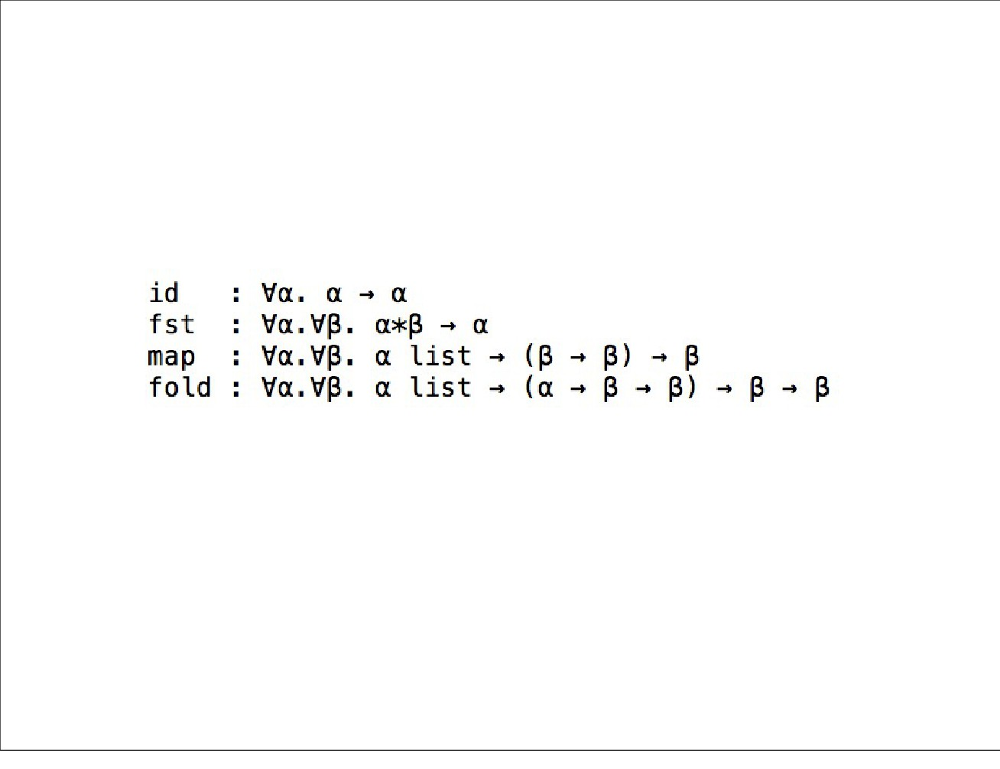
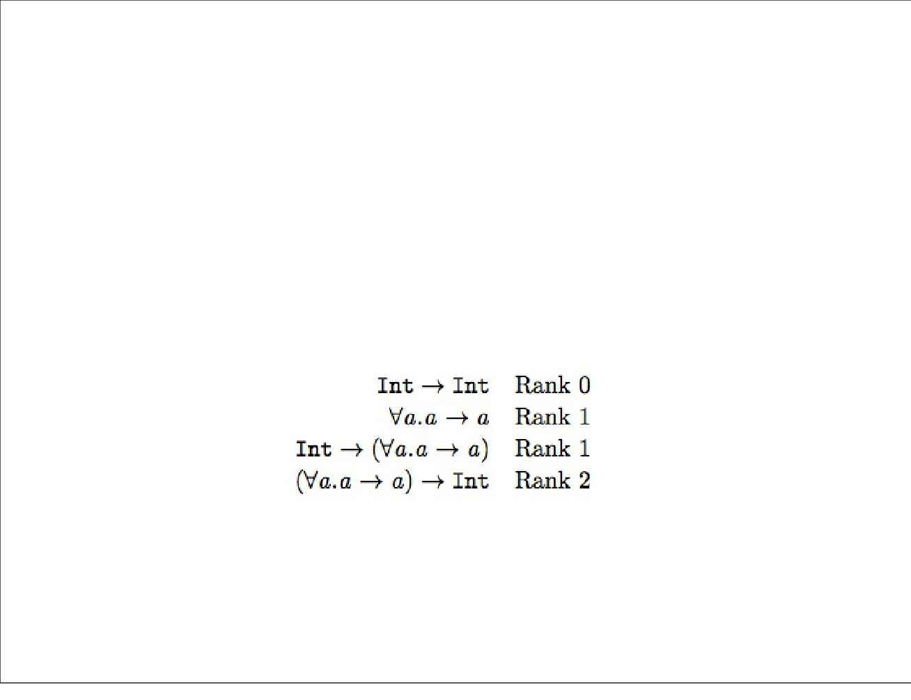
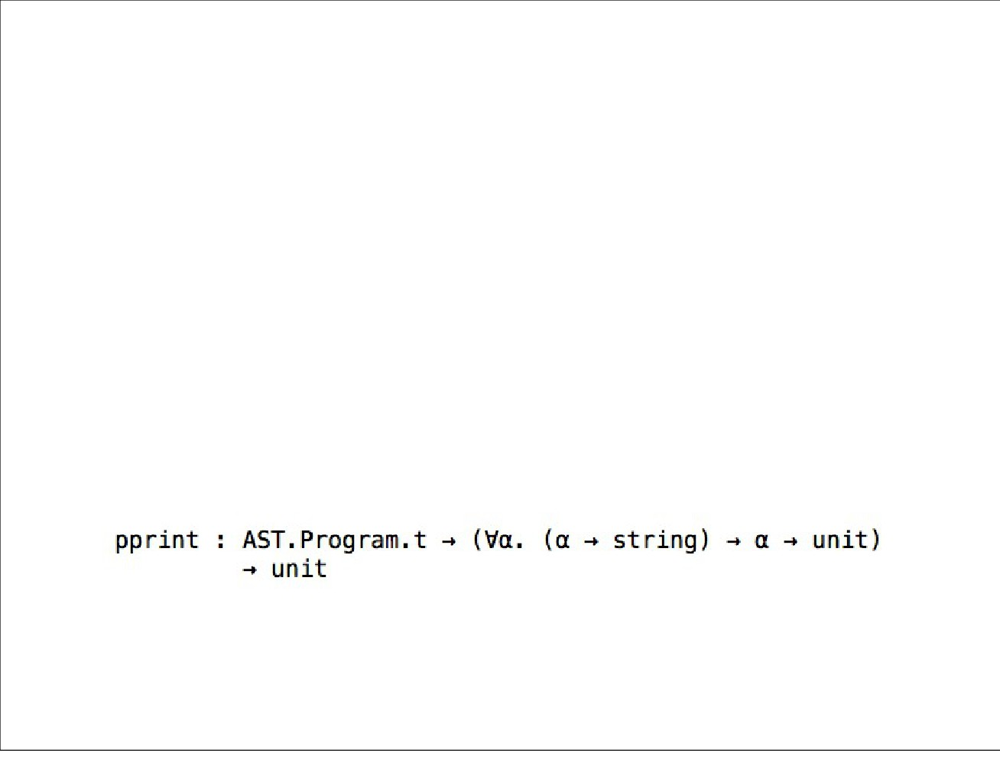
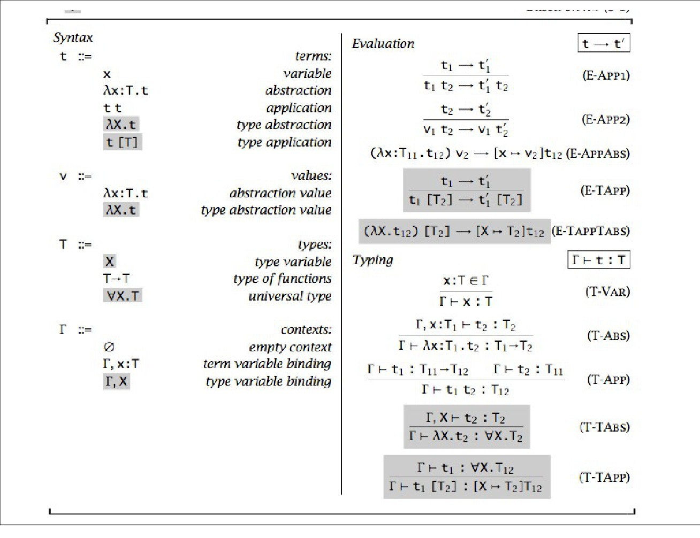
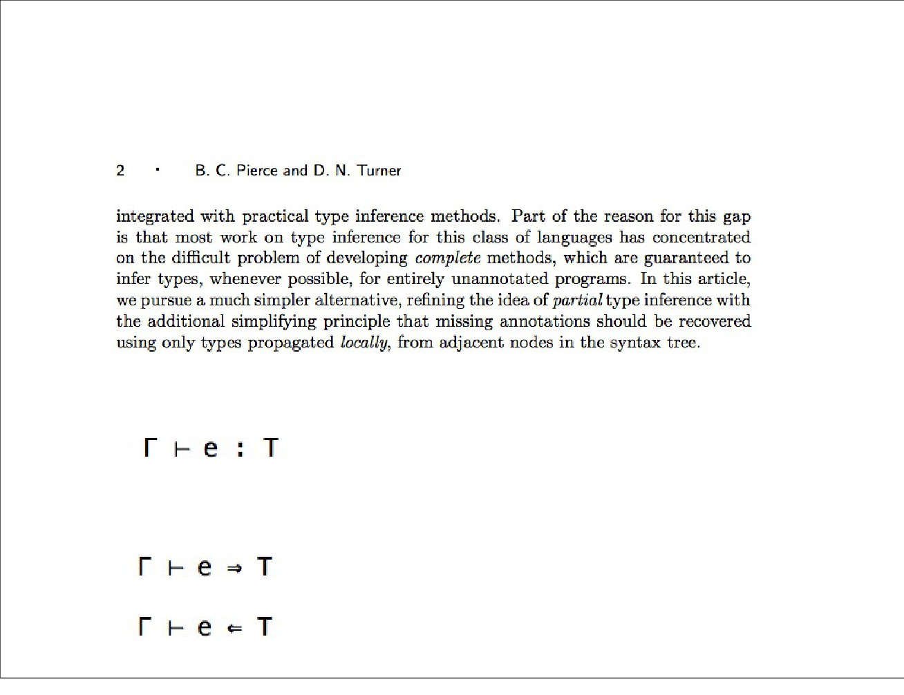
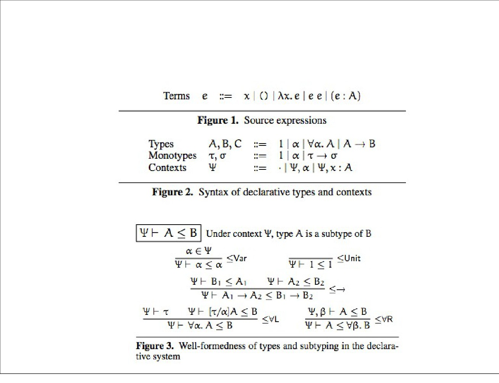
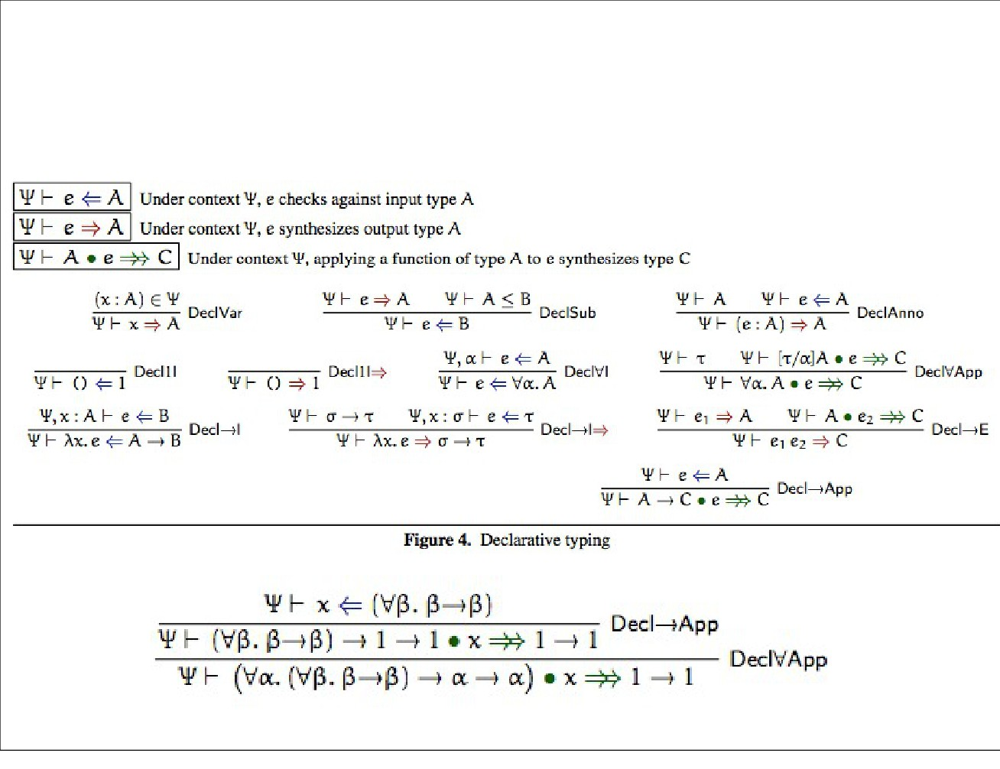
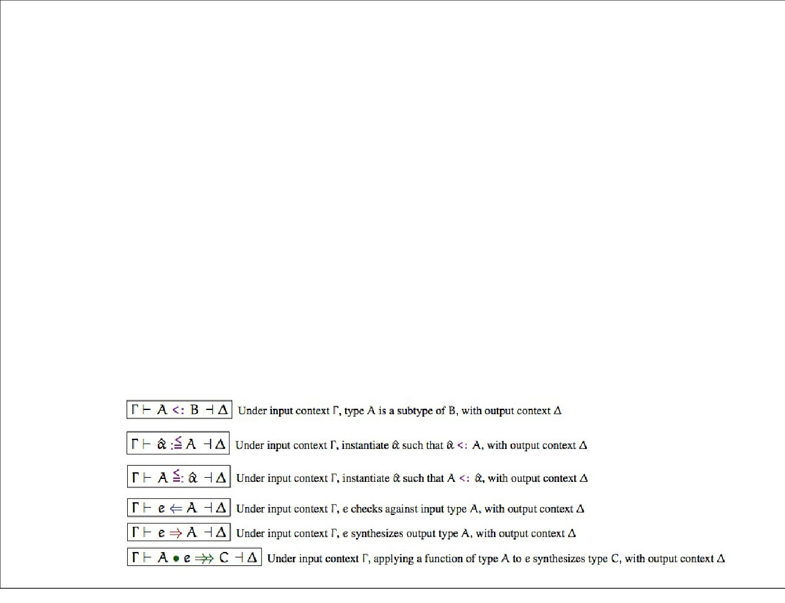
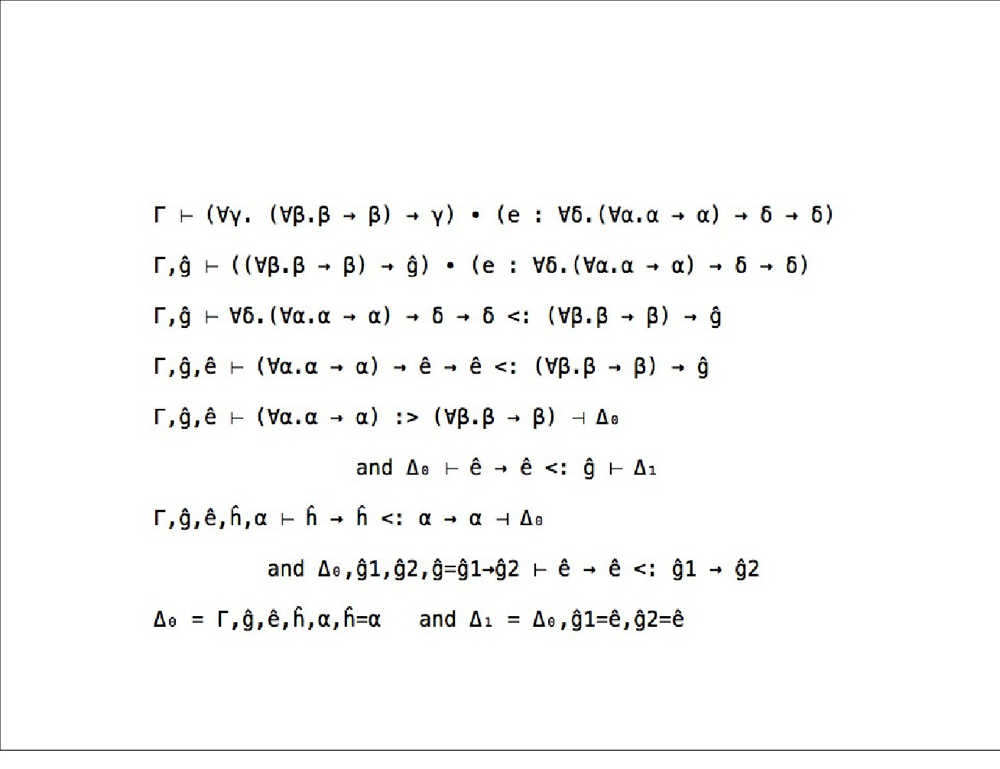

Complete and Easy Bidirectional
Typechecking for Higher-Rank
Polymorphism
Joshua Dunfield
Neelakantan R. Krishnaswami
Monday, December 9, 13
Overview
• Higher-Rank Polymorphism
• Type Checking for Higher-Rank Polymorphism
• Bidirectional Type Checking
• Complete and Easy Bidirectional Type Checking
for Higher-Rank Polymorphism
Monday, December 9, 13

ML Polymorphism
• Consider types of some popular polymorphic functions
in ML:
• Observe that quantifiers for type variables only occur at
the prenex position.
• An ML function cannot be polymorphic in its arguments.
• Can it be polymorphic in its return value?
• A price that we pay for decidable type inference.
Monday, December 9, 13

Rank of a Polymorphic Type
• Polymorphism that we have in ML is rank-1 predicative
polymorphism
• A type is said to be of rank n if no path from its root to
a ∀ quantifier passes to the left of n or more arrows,
when the type is drawn as a tree
• Polymorphism is impredicative if quantified type variables
can be instantiated with polymorphic types. Predicative, if
they can only be instantiated with monotypes.
Monday, December 9, 13

Why Higher-Rank and Impredicativity?
• Higher-rank and impredicative polymorphism can be
useful.
• polymorphic recursion possible.
• More programs typeable.
• System FC (SPJ’07), the core language of GHC is a
higher-rank impredicative system.
Monday, December 9, 13
System F
• Girard-Reynold’s polymorphic lambda calculus (1972)
• Basis for foundational work on parametric
polymorphism.
• Incorporates higher-rank impredicative polymorphism.
• The calculus is a straightforward extension of STLC
with abstraction and application at the level of types.
• Enjoys usual properties:
• Type Safety
• Strong Normalization!
Monday, December 9, 13

Monday, December 9, 13
System F
• Type Inference for System F is undecidable (Wells, ‘94)
• Various forms of partial type inference are also
undecidable.
• Importantly, it is impossible to infer instantiations for
type variables at type applications. (Boehm, ’85,’89)
• Types can only be checked.
• Therefore, it is inevitable that programs written in the
full System F be heavily annotated.
Monday, December 9, 13
Predicative System F
• Restrict System F such that type variables can only
instantiated with monotypes.
• Type inference remains undecidable (Pfenning, ‘92)
• Partial type inference where types can be erased from
functions is also undecidable (Pfenning, ‘92)
• However, as it turns out, (monotype) instantiations for
type variables can be inferred at type application sites
(the current paper).
Monday, December 9, 13

Bidirectional Type Checking
• First formalized by Pierce and Turner (2002)
• Split the judgement:
Under Gamma, exp e has type T
• Into two judgements:
Under Gamma, exp e synthesizes type T
Under Gamma, exp e is checked against type T
Monday, December 9, 13
The Paper
• They give a axiomatic, bidirectional type rules grounded
in proof theory. Axiomatic because rules “guess” the
instantiations for type variables.
• Typing is stable under \eta reduction
• Sound and Complete w.r.t the usual type assignment
rules of System F
• They give algorithmic version to implement the
axiomatic system.
• Sound and Complete w.r.t axiomatic version.
• They prove decidability of their algorithm.
Monday, December 9, 13

Syntax and Axiomatic Rules
Monday, December 9, 13

Syntax and Axiomatic Rules
Monday, December 9, 13

Algorithmic Typing
• Eliminates the need for guessing
• Introduces existential type variables (denoted â). Uses
them to instantiate regular type variables. Solves
existentials through usual method of unification.
• Typing judgements are extended with output context
(Δ) that is “more solved” than the input context (Γ).
Some of the existential variables in Γ are solved in Δ.
Monday, December 9, 13

Algorithmic Typing - Example
Monday, December 9, 13